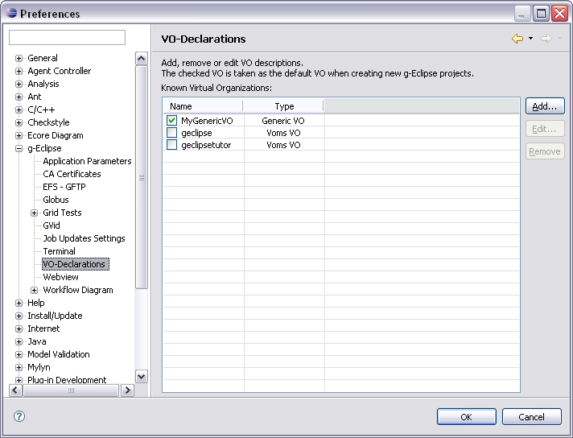
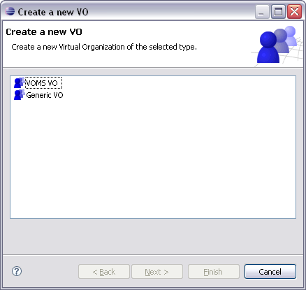
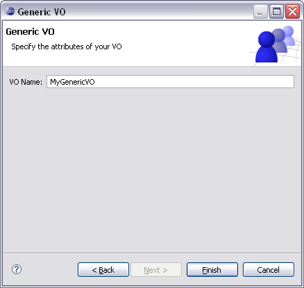

VO Settings
The most important g-Eclipse preference is the declaration of at
least one valid Virtual Organization (in short VO). In terms of the
Grid a VO is
[...] a group of individuals or institutions who
share the computing resources of a "grid" for a common goal;
Within g-Eclipse VOs are used as the central access point to the user's
personalized Grid. VOs are therefore specific for a certain middleware.
In general a VO implementation requires at least a contact string for
contacting a specific information service. This service is afterwards
used by g-Eclipse to query the Grid - or to be more precise the
underlying middleware - for available resources like computing elements,
storage elements and other services.
Since not all currently available middlewares support the concept
of Virtual Organizations g-Eclipse comes with a generic VO implementation
that is simply a named but empty resource container. This generic VO
may also be used as base class for developers to define their own VO.

You can use the
 g-Eclipse > VO-Declarations preference page to setup a new
Virtual Organization. There you can click Add... to start the
VO Wizard. If you installed g-Eclipse with a middleware extension
the VO Wizard may show up a first page that let you choose the
type of the VO you want to create:
g-Eclipse > VO-Declarations preference page to setup a new
Virtual Organization. There you can click Add... to start the
VO Wizard. If you installed g-Eclipse with a middleware extension
the VO Wizard may show up a first page that let you choose the
type of the VO you want to create:

For the setup of a middleware specific VO please see the corresponding
help pages of the middleware specific help. If no middleware extension is
available the VO Wizard will directly switch to the wizard page
for setting up a generic VO:

All you have to do here is to enter a name for your generic VO and to press
Finish. Afterwards the newly create VO will be shown in the VO
preference page.
To edit the settings of a VO open the
g-Eclipse > VO-Declarations preference page. Select the VO
you would like to edit and click Edit.... Now the
VO Wizard shows up with the and automatically switches to the wizard
page where you may edit the settings of the selected VO. Note that you can
change any setting except the VOs name. After you did your changes click
Finish and your new VO settings will be saved.
To start editing a VO you can also simply double-click this VO in the
list of all currently available VOs.
To delete one or multiple VOs open the
g-Eclipse > VO-Declarations preference page. Select the
VOs you want to delete. You may also select multiple VOs that will
afterwards be deleted in a single operation. Click Remove and the
selected VOs will be deleted from the list of declared VOs.